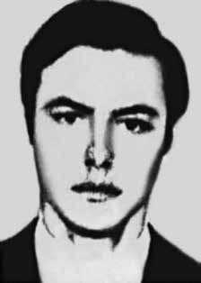

Francisco
Emanuel
Penteado
CIRCUNSTÂNCIAS DA MORTE
Francisco Emanuel Penteado morreu em 15 de março de 1973, em São Paulo, na mesma ocasião em que Arnaldo Cardoso Rocha e Francisco Seiko Okama.
A versão oficial da ditadura sobre sua morte, noticiada pelos jornais e registrada em relatórios do Ministério da Aeronáutica encaminhado ao ministro da Justiça, em 1993, relatam que Francisco Penteado teria morrido em tiroteio junto com Arnaldo Cardoso Rocha e Francisco Seiko Okama, companheiros da ALN, na rua Caquito, no bairro da Penha (SP), em 15 de março de 1973.
Os militantes teriam reagido ao serem surpreendidos pela polícia. Na troca de tiros, dois deles teriam morrido no local, enquanto o outro teria conseguido fugir em um primeiro momento. Contudo, teria sido alcançado e atingido próximo ao local do tiroteio, também vindo a falecer na hora. Apesar disso, nenhuma perícia foi realizada no local, e nenhuma foto dos corpos foi encontrada. Em 1980, essa versão da morte foi questionada por Iara Xavier Pereira e Suzana Lisbôa que, ao retornarem ao local onde teria ocorrido o tiroteio, conseguiram encontrar um menino que testemunhou a prisão de Arnaldo Cardoso.
O jovem confirmou ter visto um homem “moreno” correndo cambaleando e, posteriormente, caindo de bruços no chão, ocasião em que teria sido colocado, ao lado de uma mulher com uma mecha branca no cabelo, num Volkswagem verde. A descrição era compatível com Arnaldo, já que Francisco Seiko Okama tinha traços orientais e Francisco Penteado era loiro. Também obtiveram o depoimento de outro morador do local, que afirmou ter visto um rapaz claro, que parecia se tratar de Francisco Emanuel Penteado, sendo atingido antes de dobrar a esquina da rua, caindo e sendo pego pelos agentes da repressão, que o colocaram em uma caminhonete Veraneio.
O depoimento do ex-agente do DOI-CODI, Marival Chaves do Canto, à revista Veja, em 1992, trouxe novas informações sobre o caso, ao revelar que os referidos militantes estavam sendo vigiados pelas forças da repressão. Essa informação permitiu confrontar a versão de que o encontro dos militantes com os policiais foi casual, porque no dia 2 de março de 1973, dias antes da emboscada, Arnaldo foi perseguido pela polícia e baleado, mas conseguiu escapar com vida. Desde então, o militante passou a ser seguido pelos órgãos da repressão, o que veio a resultar na emboscada do dia 15 de março.
Contestando a notícia de que os três militantes teriam morrido em tiroteio, há também o depoimento de Amílcar Baiardi, que esteve preso no DOI-CODI nesse período. Ele afirmou ter visto dois jovens feridos sendo interrogados na quadra de esportes do referido órgão enquanto agonizavam. Baiardi ressaltou que, apesar de não poder identificar diretamente as vítimas, associou o fato às notícias de jornal na época e ressaltou que um dos presos tinha traços orientais, e era chamado pelos agentes da repressão de “japonês”, e que poderia ser Francisco Seiko Okama.
Há indicativos, portanto, de que houve a intenção de executar os militantes, valendo acrescentar que, no parecer da Comissão Especial de Mortos e Desaparecidos Políticos, foram registradas outras fragilidades da versão dos órgãos da repressão: “[…] as armas que teriam sido encontradas em poder dos militantes só foram formalmente apreendidas pela autoridade militar em 19 de março, quatro dias depois, e não há notícia de que tenham sido submetidas a exame pericial. Ao mesmo tempo, os militantes teriam sido entregues ao Instituto Médico-Legal sem calças, o que aponta que entre o tiroteio e a sua chegada ao IML passaram por algum lugar, provavelmente pelo DOI-CODI.”
O relator do caso, Luiz Francisco Carvalho, ainda acrescenta que nas notícias de jornais os três são identificados pelos seus codinomes, enquanto no registro do IML há o nome verdadeiro, o que leva a crer que alguma ficha sobre eles fora feita quando da passagem pelo DOI-CODI. A versão de que os militantes tenham passado pelo DOI-CODI é reforçada pelas informações levantas pela análise pericial realizada pela CNV, no laudo do Exame Necroscópico e exame de antropologia forense de Arnaldo Cardoso Rocha.
No corpo deste, foram constatados a existência de mais de 30 achados, ou seja, marcas, escoriações e equimoses que não foram relatadas a época. Mais grave é que, dentre os achados descritos no Laudo de Necropsia, não constam duas feridas produzidas por entradas de projeteis expelidos por arma(s) de fogo, localizadas na região parietal esquerda de Arnaldo Cardoso Rocha, sendo que outros dois atingiram sua cabeça, e outra ainda a clavícula direita, que poderiam caracterizar evento compatível com execução.
Junta-se a esta tese a simetria das feridas encontradas no corpo de Arnaldo, indicando que o mesmo foi vítima de intensa tortura, nomeadamente a conhecida por “falanga”, na qual a pessoa torturada recebe reiterados golpes nos pés e nas mãos produzidos por barras de ferro, cassetetes ou outros congêneres. Os três corpos foram liberados aos familiares para sepultamentos em caixões lacrados.
Francisco Penteado foi sepultado no cemitério Gethsêmani, em São Paulo, no dia 16 de março de 1973.
Francisco Emanuel Penteado died on March 15, 1973, in São Paulo, on the same occasion as Arnaldo Cardoso Rocha and Francisco Seiko Okama.
The dictatorship's official version of his death, reported by newspapers and recorded in reports from the Ministry of Aeronautics sent to the Minister of Justice in 1993, states that Francisco Penteado had died in a shootout along with Arnaldo Cardoso Rocha and Francisco Seiko Okama, ALN companions, on Caquito Street, in the Penha neighborhood (SP), on March 15, 1973.
The militants would have reacted when surprised by the police. In the exchange of gunfire, two of them would have died on the spot, while the other would have managed to escape at first. However, he was caught and shot close to the scene of the shooting, and also died at the scene. Despite this, no forensic examination was carried out at the scene, and no photos of the bodies were found. In 1980, this version of the death was questioned by Iara Xavier Pereira and Suzana Lisbôa who, upon returning to the place where the shooting had occurred, managed to find a boy who witnessed Arnaldo Cardoso's arrest.
The young man confirmed that he saw a “dark-skinned” man running, staggering and, later, falling face down on the ground, when he was placed, next to a woman with a white streak in her hair, in a green Volkswagen. The description was compatible with Arnaldo, since Francisco Seiko Okama had oriental features and Francisco Penteado was blond. They also obtained a statement from another local resident, who stated that he saw a young man, who appeared to be Francisco Emanuel Penteado, being hit before turning the corner of the street, falling and being caught by the repression agents, who placed him in a Veraneio truck.
The testimony of former DOI-CODI agent, Marival Chaves do Canto, to Veja magazine, in 1992, brought new information about the case, revealing that the aforementioned militants were being watched by the forces of repression. This information allowed us to confront the version that the militants' meeting with the police was random, because on March 2, 1973, days before the ambush, Arnaldo was chased by the police and shot, but managed to escape with his life. Since then, the militant began to be followed by repression bodies, which resulted in the ambush on March 15th.
Disputing the news that the three militants had died in a shootout, there is also the testimony of Amílcar Baiardi, who was imprisoned at DOI-CODI during that period. He stated that he saw two injured young men being interrogated in the sports court of the aforementioned organization while they were in agony. Baiardi highlighted that, despite not being able to directly identify the victims, he associated the fact with newspaper reports at the time and highlighted that one of the prisoners had oriental features, and was called “Japanese” by the repression agents, and that he could be Francisco Seiko Okama.
There are indications, therefore, that there was an intention to execute the militants, and it is worth adding that, in the opinion of the Special Commission on Political Deaths and Disappearances, other weaknesses were recorded in the version of the repression bodies: “[…] the weapons that would have been found in the possession of the militants were only formally seized by the military authority on March 19, four days later, and there is no news that they were subjected to expert examination. At the same time, the militants would have been handed over to the Institute Medical Examiner without pants, which indicates that between the shooting and their arrival at the IML they passed through somewhere, probably DOI-CODI.”
The case's rapporteur, Luiz Francisco Carvalho, also adds that in newspaper reports the three are identified by their codenames, while in the IML record there is their real name, which leads us to believe that some form was made about them when they were sent to DOI-CODI. The version that the militants passed through the DOI-CODI is reinforced by the information gathered by the expert analysis carried out by the CNV, in the Necroscopic Examination report and forensic anthropology examination of Arnaldo Cardoso Rocha.
On his body, there were more than 30 findings, that is, marks, abrasions and bruises that were not reported at the time. More serious is that, among the findings described in the Necropsy Report, there are no two wounds produced by projectiles expelled by firearm(s), located in the left parietal region of Arnaldo Cardoso Rocha, with two others hitting his head, and another hitting his right clavicle, which could characterize an event compatible with execution.
Added to this thesis is the symmetry of the wounds found on Arnaldo's body, indicating that he was a victim of intense torture, namely that known as “falanga”, in which the tortured person receives repeated blows to the feet and hands caused by iron bars, batons or other similar elements. The three bodies were released to family members for burial in sealed coffins.
Francisco Penteado was buried in the Gethsêmani cemetery, in São Paulo, on March 16, 1973.
Francisco Emanuel Penteado murió el 15 de marzo de 1973, en São Paulo, al mismo tiempo que Arnaldo Cardoso Rocha y Francisco Seiko Okama.
La versión oficial de la dictadura sobre su muerte, difundida por los periódicos y recogida en informes del Ministerio de Aeronáutica enviados al Ministro de Justicia en 1993, afirma que Francisco Penteado había muerto en un tiroteo junto con Arnaldo Cardoso Rocha y Francisco Seiko Okama, compañeros de la ALN, en la calle Caquito, en el barrio de Penha (SP), el 15 de marzo de 1973.
Los militantes habrían reaccionado al ser sorprendidos por la policía. En el intercambio de disparos, dos de ellos habrían muerto en el acto, mientras que el otro habría logrado escapar en un primer momento. Sin embargo, fue capturado y baleado cerca del lugar del tiroteo, y también murió en el lugar. Pese a ello, no se llevó a cabo ningún examen forense en el lugar y no se encontraron fotografías de los cadáveres. En 1980, esta versión de la muerte fue cuestionada por Iara Xavier Pereira y Suzana Lisbôa quienes, al regresar al lugar donde ocurrió el tiroteo, lograron encontrar a un niño que presenció la detención de Arnaldo Cardoso.
El joven confirmó que vio a un hombre “moreno” correr, tambalearse y, luego, caer boca abajo en el suelo, cuando lo colocaron, junto a una mujer con un mechón blanco en el cabello, en un Volkswagen verde. La descripción era compatible con Arnaldo, ya que Francisco Seiko Okama tenía rasgos orientales y Francisco Penteado era rubio. También obtuvieron la declaración de otro vecino del lugar, quien afirmó haber visto a un joven, que parecía ser Francisco Emanuel Penteado, ser golpeado antes de doblar la esquina de la calle, caer y ser atrapado por los agentes de represión, quienes lo subieron a una camioneta Veraneio.
El testimonio del ex agente del DOI-CODI, Marival Chaves do Canto, a la revista Veja, en 1992, aportó nuevas informaciones sobre el caso, revelando que los militantes antes mencionados estaban siendo vigilados por las fuerzas de represión. Esta información permitió confrontar la versión de que el encuentro de los militantes con la policía fue casual, pues el 2 de marzo de 1973, días antes de la emboscada, Arnaldo fue perseguido por la policía y baleado, pero logró escapar con vida. Desde entonces, el militante comenzó a ser seguido por los órganos de represión, lo que desembocó en la emboscada del 15 de marzo.
Desmentiendo la noticia de que los tres militantes habían muerto en un tiroteo, también está el testimonio de Amílcar Baiardi, quien estuvo recluido en el DOI-CODI durante ese período. Manifestó que vio a dos jóvenes heridos siendo interrogados en la cancha deportiva de la mencionada organización mientras agonizaban. Baiardi destacó que, a pesar de no poder identificar directamente a las víctimas, asoció el hecho con informes periodísticos de la época y destacó que uno de los prisioneros tenía rasgos orientales, y fue llamado “japonés” por los agentes de represión, y que podría ser Francisco Seiko Okama.
Hay indicios, por tanto, de que hubo intención de ejecutar a los militantes, y vale agregar que, a juicio de la Comisión Especial sobre Muertes y Desapariciones Políticas, se registraron otras debilidades en la versión de los órganos de represión: “[…] las armas que habrían sido encontradas en poder de los militantes fueron incautadas formalmente por la autoridad militar recién el 19 de marzo, cuatro días después, y no hay noticias de que hayan sido sometidas a peritajes. habría sido entregado al Médico Forense del Instituto sin pantalones, lo que indica que entre el tiroteo y su llegada al IML pasaron por algún lugar, probablemente DOI-CODI”.
El relator del caso, Luiz Francisco Carvalho, agrega también que en los periódicos los tres son identificados por sus nombres en clave, mientras que en el registro del IML aparece su nombre real, lo que lleva a creer que se hizo algún formulario sobre ellos cuando fueron enviados al DOI-CODI. La versión de que los militantes pasaron por el DOI-CODI se ve reforzada por la información recabada por el peritaje realizado por la CNV, en el informe de Examen Necroscópico y examen de antropología forense a Arnaldo Cardoso Rocha.
En su cuerpo quedaron más de 30 hallazgos, es decir, marcas, abrasiones y hematomas que no fueron reportados en su momento. Más grave es que, entre los hallazgos descritos en el Informe de Necropsia, no se encuentran dos heridas producidas por proyectiles expulsados por arma(s) de fuego, localizadas en la región parietal izquierda de Arnaldo Cardoso Rocha, otras dos impactan en su cabeza, y otra impacta en su clavícula derecha, lo que podría caracterizar un hecho compatible con ejecución.
A esta tesis se suma la simetría de las heridas encontradas en el cuerpo de Arnaldo, lo que indica que fue víctima de intensas torturas, concretamente la conocida como “falanga”, en la que el torturado recibe repetidos golpes en pies y manos provocados por barras de hierro, porras u otros elementos similares. Los tres cuerpos fueron entregados a sus familiares para que los enterraran en ataúdes sellados.
Francisco Penteado fue enterrado en el cementerio Getsemaní, en São Paulo, el 16 de marzo de 1973.